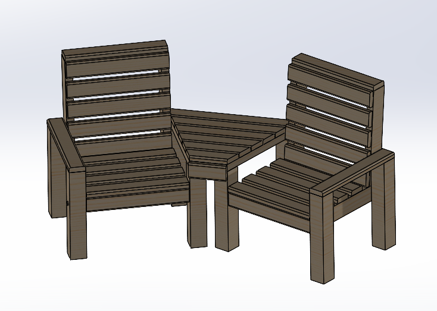
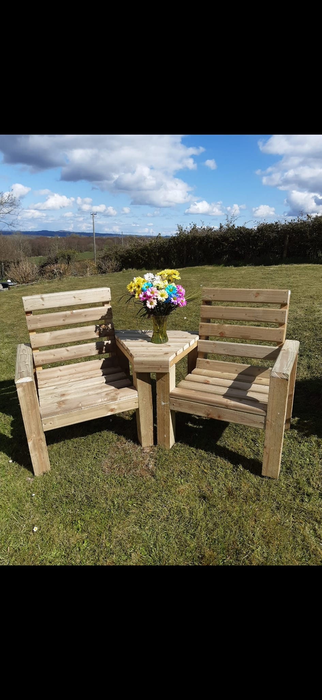
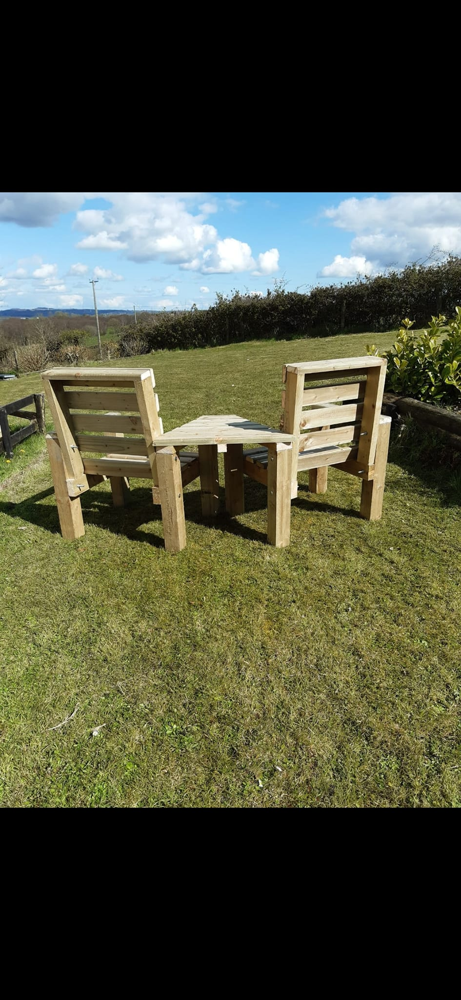

This high-quality Jack and Jill seat is built from pressure-treated timber to withstand outdoor conditions and provide a comfortable, sturdy seating option. The legs are made from 100x100 mm pressure-treated timber, the slats are 100x35 mm D rail, and other wood components are 47x100 mm, all pressure treated for durability. The entire structure is secured with decking screws and coach bolts to ensure long-lasting stability.


The design focuses on durability and comfort, with careful selection of pressure-treated timber sizes to support weight evenly and resist outdoor wear. The seating slats provide a smooth and ergonomic surface, while the solid legs ensure stability on various surfaces.
You can customize this project by adjusting dimensions or adding paint or stain for aesthetic appeal and extra protection. Adding cushions or armrests is also possible for increased comfort.
If you'd like advice or help building your own Jack and Jill seat, feel free to contact me.